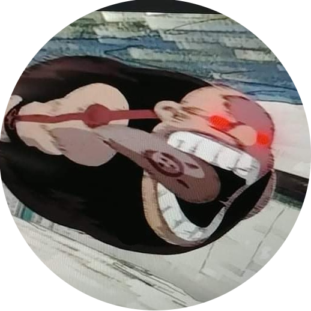

|  | Kezdőlap | Órarend | Tükör |  |
 |
|---|
 |
|---|
賢者ダース・プレイガスの悲劇を聞いたことがあるかね？
だろうな。ジェダイが君に話すようなものではないからな。
シスの伝説だ。ダース・プレイガスはシスの暗黒卿だった・・・とても強く、とても聡明だった・・・彼はフォースを使ってミディ＝クロリアンを操り、生命を作り出すことができたのだ。
彼はこのダークサイドの知識を持っていたのだよ。彼は大切だと思う者を死から遠ざけることさえできたのだ。
フォースのダークサイドは超常的とも思える多くの能力に通じているのだよ。とても強くなった。
恐れるものは力を失うことだけだった。そして当然、やがてはそうなったよ。不幸にして彼は弟子にすべての知識を与えていたのだ。
そしてその弟子が彼の寝込みを襲って殺害したのだよ。皮肉なことだ。他者を死から救うことはできても、自分自身を救うことはできなかった。